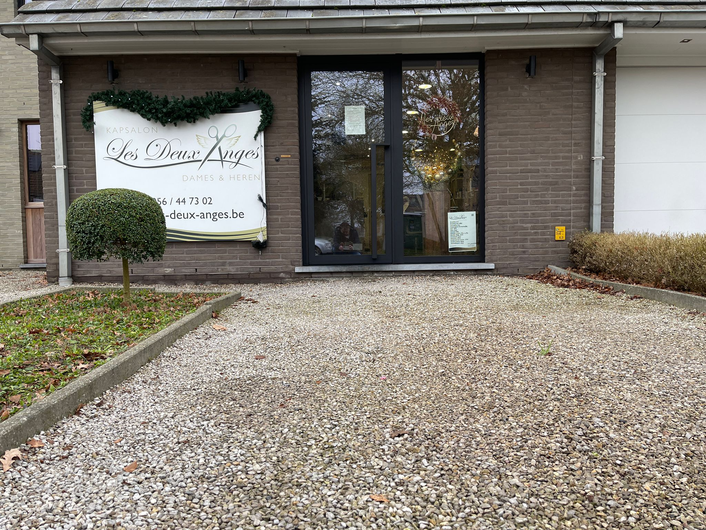
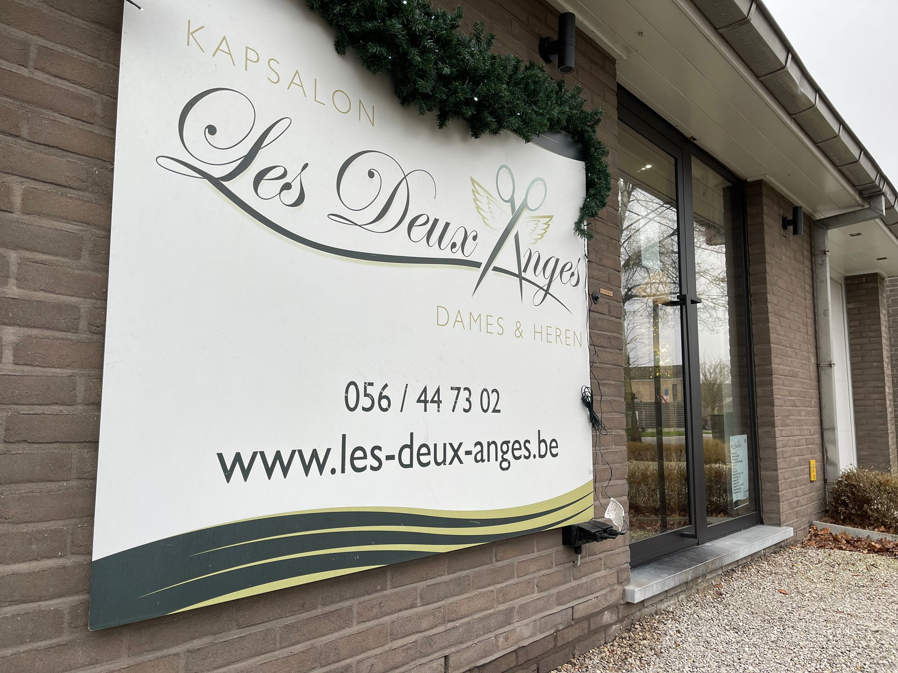

Een kapsalon waar persoonlijke aanpak en vakkennis centraal staan. Kapster Petrina Vanlerberghe - meer dan 20 jaar ervaring in de regio Kortrijk.

Les Deux Anges is een kapsalon gelegen in Heule, een deelgemeente van Kortrijk. Kapster Petrina Vanlerberghe deed ruime ervaring op in toonaangevende kapperszaken in de regio, waaronder Jacques Dessange en kapsalon Vuylsteke - samen goed voor meer dan 20 jaar ervaring.
De filosofie achter de salon staat garant voor een hedendaags kapsel aangepast aan uw eigen persoonlijkheid, gerealiseerd in een rustgevend kader. Bij Les Deux Anges kan u terecht voor de allernieuwste snitten en kleurtechnieken, speciale haarverzorgingen en meer.
"Een hedendaags kapsel aangepast aan uw eigen persoonlijkheid, in een rustgevend kader."
Oude Ieperseweg 115
8501 Heule
(Kortrijk)
BE 0535.939.747
Facebook